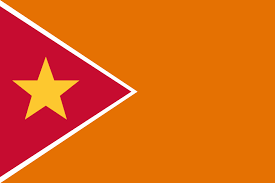

Asia is the largest and most populous continent, containing nearly 60% of the world’s population.
It is incredibly diverse, encompassing a wide range of climates, cultures, languages, and religions.
Asia is home to the world’s highest peak, Mount Everest, and the lowest point on land, the Dead Sea.
The continent is the birthplace of major world religions, including Hinduism, Buddhism, Islam, and Confucianism.
Economically, Asia is a powerhouse, with countries like China, Japan, and India playing major roles in global trade and technology.
The region has a rich history of ancient civilizations, including the Mesopotamian, Indus Valley, and Chinese civilizations.
Asia is known for its rapid modernization, with cities like Tokyo, Singapore, and Seoul leading in technological innovation and infrastructure.
Asia is the largest and most populous continent, with 49 countries, each boasting a capital city rich in culture and history.
This quiz challenges your knowledge of Asian geography by asking you to match countries with their capitals.
From the vibrant streets of Tokyo in Japan to the ancient city of Beijing in China, Asia's capitals are as diverse as the continent itself.
These cities are not just administrative centers but also cultural and economic powerhouses, with deep historical roots and modern significance.
Whether you're familiar with the bustling markets of Delhi in India or the serene temples of Bangkok in Thailand, each capital has a unique charm.
Day 1: Introduction to Asia
Asia Map.
Asia is the largest continent in the world. It has many different countries, cultures, and landscapes. From high mountains to big deserts and beautiful beaches, Asia has it all!
People and Languages
Asia is home to over 4.5 billion people who speak many different languages, like Chinese, Hindi, and Japanese.
Heroes of Asia
Many important people come from Asia. Mahatma Gandhi helped India gain independence, and Confucius was a great teacher from China.
Biggest and Smallest Features
The biggest country in Asia is China, and the smallest is the Maldives. The tallest mountain is Mount Everest, and the longest river is the Yangtze River.
Countries
There are 49 countries in Asia, including China, India, and Japan. Each country has its own unique culture and attractions.
China

The Great Wall of China, a wonder of the world and a symbol of China's historical significance.

Shanghai, a bustling metropolis showcasing China's modernity and rapid development.
India
The Himalayas, towering peaks that are a prominent feature of India's northern border.

Delhi, India's capital city, a blend of ancient history and modern culture.
Japan

Mount Fuji, an iconic mountain and symbol of Japan's natural beauty.
Tokyo, Japan's capital, known for its cutting-edge technology and vibrant culture.
Did you know?
Asia is home to the world's highest mountain, Mount Everest, standing at 8,848 meters.
The Yangtze River in China is the third longest river in the world, after the Nile and the Amazon.
Tokyo, Japan's capital, is the largest metropolitan area in the world, with over 37 million residents.
Day 2: Exploring China
Introduction to China
China is the most populous country in the world. It has a rich history, beautiful landscapes, and amazing cities. The capital city is Beijing.
Big Cities
Some of the biggest cities are Shanghai, Beijing, and Guangzhou. Each city has lots of interesting things to see and do.
Famous Places
China has many famous landmarks, like the Great Wall of China, the Forbidden City, and the Terracotta Army.
Culture
People in China speak Mandarin Chinese. They love festivals, like Chinese New Year, and delicious food, like dumplings.
Heroes
Heroes from China include Confucius, a great teacher, and Sun Yat-sen, a famous leader.
Provinces, Their Flags, and Capital Cities in China
Provinces, Their Flags, and Capital Cities in China
| Province | Flag | Capital City |
|---|---|---|
| Beijing |  |
Beijing |
| Shanghai |  |
Shanghai |
| Guangdong | Guangzhou | |
| Sichuan |  |
Chengdu |
Beijing

The Forbidden City, a magnificent imperial palace and symbol of China's rich heritage.

Beijing's modern skyline, showcasing the city's rapid development and architectural wonders.
Shanghai

The Bund, a famous waterfront area in central Shanghai known for its historic colonial buildings.

Shanghai's vibrant cityscape, a blend of futuristic architecture and traditional Chinese elements.
Guangdong

The Canton Tower, a landmark skyscraper in Guangzhou, representing modern China.
Guangzhou, a sprawling port city known for its cultural and historical significance.
Sichuan

Jiuzhaigou Valley, a stunning nature reserve in Sichuan known for its colorful lakes and waterfalls.

Chengdu, the capital city of Sichuan, famous for its pandas and spicy cuisine.
Did you know?
China is the fourth largest country in the world by land area, after Russia, Canada, and the United States.
The Great Wall of China, stretching over 21,000 kilometers, is one of the most impressive man-made structures in the world.
China is known for its rich tea culture, with different regions producing a variety of unique teas.
Day 3: Exploring India
Introduction to India
India is a large and colorful country in Asia. It has diverse cultures, landscapes, and traditions. The capital city is New Delhi.
Big Cities
Some big cities in India are Mumbai, Delhi, and Bangalore. Each city is special and has lots to offer.
Natural Beauty
India is known for its beautiful landscapes like the Himalayas, the Thar Desert, and the backwaters of Kerala.
People and Languages
People in India speak many languages, including Hindi and English. They love festivals, like Diwali and Holi, and delicious food, like curry and biryani.
Famous Indians
Some famous people from India include Mahatma Gandhi, who helped India gain independence, and Rabindranath Tagore, a famous writer and poet.
States, Their Flags, and Capital Cities in India
| State | Flag | Capital City |
|---|---|---|
| Maharashtra |  | Mumbai |
| Uttar Pradesh |  |
Lucknow |
| Tamil Nadu |  |
Chennai |
| Karnataka |  |
Bangalore |
Maharashtra

The Gateway of India, a historical monument and a major tourist attraction in Mumbai, Maharashtra.

Mumbai, the financial capital of India, known for its vibrant nightlife and Bollywood film industry.
Uttar Pradesh

The Taj Mahal, an ivory-white marble mausoleum in Agra, a symbol of love and one of the Seven Wonders of the World.
Lucknow, the capital city of Uttar Pradesh, famous for its rich history, culture, and cuisine.
Tamil Nadu

The Meenakshi Temple, a historic Hindu temple in Madurai, known for its stunning architecture and intricate carvings.
Chennai, the capital city of Tamil Nadu, known for its beaches, temples, and vibrant cultural scene.
Karnataka

Coorg, a beautiful hill station in Karnataka, known for its lush greenery and coffee plantations.
Bangalore, the capital city of Karnataka, known as the Silicon Valley of India, a hub for technology and innovation.
Did you know?
India is the world's second-most populous country, with over 1.3 billion people.
The Indian film industry, known as Bollywood, is the largest in the world, producing over 1,000 films per year.
The Kumbh Mela, held every 12 years, is the largest religious gathering in the world, attracting millions of pilgrims.
You're Ready to Take the First Quiz!
Head over to the home page to get started with your first quiz!
Day 4: Exploring Japan

This image captures the essence of Japan, highlighting its rich blend of traditional culture and modern innovation.
Introduction to Japan
Japan is an island country in Asia. It is known for its technology, culture, and beautiful landscapes. The capital city is Tokyo.
Big Cities
Other big cities in Japan include Osaka, Kyoto, and Hiroshima. Each city has its own unique culture and attractions.
Natural Beauty
Japan is known for its cherry blossoms, Mount Fuji, and beautiful gardens.
People and Languages
People in Japan speak Japanese. They enjoy festivals, like Hanami and Obon, and delicious food, like sushi and ramen.
Famous Japanese
Some famous people from Japan include Akira Kurosawa, a famous filmmaker, and Marie Kondo, a well-known organizing consultant.
Prefectures, Their Flags, and Capital Cities in Japan
| Prefecture | Flag | Capital City |
|---|---|---|
| Tokyo |  |
Tokyo |
| Osaka | Osaka | |
| Kyoto |  |
Kyoto |
| Hokkaido |  |
Sapporo |
Tokyo

The iconic Tokyo Tower, a communications and observation tower in the Shiba-koen district of Minato, Tokyo.

Shibuya Crossing, one of the world's busiest pedestrian crossings, known for its vibrant atmosphere and neon lights.
Osaka

Osaka Castle, a historic landmark and a major tourist attraction, especially during the cherry blossom season.
Dotonbori, a popular tourist destination in Osaka, known for its lively atmosphere and street food.
Kyoto

The Fushimi Inari Shrine, famous for its thousands of vermilion torii gates, leading into the wooded forest of the sacred Mount Inari.

The traditional streets of Gion, a district in Kyoto, known for its geishas and historic teahouses.
Hokkaido

The stunning landscapes of Hokkaido, known for its national parks, hot springs, and ski resorts.
Sapporo, the largest city on the island of Hokkaido, famous for its annual snow festival and delicious seafood.
Did you know?
Japan has more than 6,800 islands, with four main islands: Honshu, Hokkaido, Kyushu, and Shikoku.
The Shinkansen, or bullet train, is one of the fastest and most efficient train systems in the world, reaching speeds up to 320 km/h (200 mph).
Japan is home to 20 UNESCO World Heritage sites, including the Historic Monuments of Ancient Kyoto and the Itsukushima Shrine.
Day 5: Exploring South Korea

This image showcases the blend of modernity and tradition that defines South Korea's unique landscape and culture.
Introduction to South Korea
South Korea is a country in East Asia known for its technology, culture, and beautiful scenery. The capital city is Seoul.
Big Cities
Other big cities in South Korea include Busan and Incheon. Each city has its own unique culture and attractions.
Natural Beauty
South Korea is known for its mountains, islands, and national parks.
People and Languages
People in South Korea speak Korean. They enjoy festivals, like Chuseok and Seollal, and delicious food, like kimchi and bulgogi.
Famous South Koreans
Some famous people from South Korea include Ban Ki-moon, a former UN Secretary-General, and BTS, a famous music group.
Provinces, Their Flags, and Capital Cities in South Korea
| Province | Flag | Capital City |
|---|---|---|
| Seoul | Seoul | |
| Busan |  |
Busan |
| Incheon | Incheon | |
| Gyeonggi |  |
Suwon |
Seoul

N Seoul Tower, a communication and observation tower located on Namsan Mountain in central Seoul.

Gangnam District, known for its trendy shopping and entertainment venues, highlighted by the iconic COEX Mall.
Busan

Haeundae Beach, one of the most popular beaches in South Korea, famous for its beautiful white sand and beach festivals.

Busan Tower, a symbol of Busan located in Yongdusan Park, offering panoramic views of the city.
Incheon

Incheon Bridge, a cable-stayed bridge that connects the city of Incheon to Yeongjong Island and Incheon International Airport.

Songdo International Business District, a modern and sustainable city built on reclaimed land.
Gyeonggi
Namyangju, known for its scenic views and proximity to the Bukhan River and surrounding mountains.

Suwon, the capital of Gyeonggi-do, famous for the Hwaseong Fortress, a UNESCO World Heritage Site.
Did you know?
South Korea is home to the world's first cloned dog, Snuppy, created by scientists at Seoul National University in 2005.
Seoul is known for its vast subway system, which is one of the largest in the world and serves over 7 million passengers daily.
The Korean demilitarized zone (DMZ) is the most heavily guarded border in the world, separating North and South Korea.
Day 6: Exploring Thailand

This image captures the vibrant culture and natural beauty of Thailand, known for its stunning beaches and rich heritage.
Introduction to Thailand
Thailand is a country in Southeast Asia known for its tropical beaches, royal palaces, and ancient ruins. The capital city is Bangkok.
Big Cities
Other big cities in Thailand include Chiang Mai and Pattaya. Each city has its own unique attractions and culture.
Natural Beauty
Thailand is known for its islands, mountains, and beautiful temples.
People and Languages
People in Thailand speak Thai. They love festivals, like Songkran and Loy Krathong, and delicious food, like pad thai and tom yum soup.
Famous Thais
Some famous people from Thailand include King Bhumibol Adulyadej, the longest-reigning monarch, and Apichatpong Weerasethakul, a famous filmmaker.
Provinces, Their Flags, and Capital Cities in Thailand
| Province | Flag | Capital City |
|---|---|---|
| Bangkok | Bangkok | |
| Chiang Mai |  |
Chiang Mai |
| Phuket |  |
Phuket |
| Surat Thani |  |
Surat Thani |
Bangkok

The Grand Palace in Bangkok, a complex of ornate buildings and sacred sites, including the Temple of the Emerald Buddha.

Wat Arun, also known as the Temple of Dawn, located on the west bank of the Chao Phraya River in Bangkok.
Chiang Mai

Doi Suthep, a mountain that overlooks Chiang Mai, home to the famous Wat Phra That Doi Suthep temple.

Chiang Mai Old City, surrounded by ancient walls and filled with historic temples and markets.
Phuket

Phang Nga Bay, known for its limestone karsts and caves, offering spectacular views and kayaking experiences.

Patong Beach, a popular tourist destination in Phuket, famous for its vibrant nightlife and beautiful sandy beaches.
Surat Thani

Khao Sok National Park, a lush rainforest reserve featuring diverse wildlife, waterfalls, and Cheow Lan Lake.

Surat Thani City, known for its role as a gateway to the islands and for its rich cultural festivals and events.
Did you know?
Thailand is the only Southeast Asian country that has never been colonized by a European power, hence the name 'Prathet Thai' which means 'Land of the Free'.
The world's smallest mammal, the bumblebee bat, can be found in the western regions of Thailand.
Thailand has more than 1,400 islands, making it a perfect destination for island-hopping adventures.
You're Ready to Take the second Quiz!
Head over to the home page to get started with your second quiz!
Day 7: Exploring Indonesia

This image showcases Indonesia's diverse landscapes, from lush rainforests to pristine beaches and vibrant cities.
Introduction to Indonesia
Indonesia is an island country in Southeast Asia. It has thousands of islands, beautiful beaches, and rich culture. The capital city is Jakarta.
Big Cities
Other big cities in Indonesia include Surabaya and Bandung. Each city has its own unique attractions and culture.
Natural Beauty
Indonesia is known for its volcanoes, rainforests, and coral reefs.
People and Languages
People in Indonesia speak Bahasa Indonesia. They love festivals, like Nyepi and Galungan, and delicious food, like nasi goreng and satay.
Famous Indonesians
Some famous people from Indonesia include Sukarno, the first president, and Anggun, a famous singer.
Jakarta
.jpeg)
National Monument (Monas) in Jakarta, a symbol of Indonesia's independence and a popular tourist attraction.
Bali

Uluwatu Temple, a famous sea temple located on the edge of a cliff in Bali, offering stunning ocean views.
East Java

Mount Bromo, an active volcano in East Java, famous for its stunning sunrise views and rugged landscapes.

Surabaya, the capital of East Java, known for its historical landmarks and as a commercial and industrial hub.
Did you know?
Indonesia is the world's largest archipelago, comprising over 17,000 islands, of which about 6,000 are inhabited.
The Komodo dragon, the world's largest living species of lizard, is found only in the Indonesian islands of Komodo, Rinca, Flores, and Gili Motang.
Indonesia is the largest producer of palm oil in the world, which is used in a variety of products from food to cosmetics.
Day 8: Exploring the Philippines

An aerial view of the Philippines' stunning beaches and lush greenery.
Introduction to the Philippines
The Philippines is an island country in Southeast Asia. It has thousands of islands, beautiful beaches, and rich culture. The capital city is Manila.
Big Cities
Other big cities in the Philippines include Cebu and Davao. Each city has its own unique attractions and culture.
Natural Beauty
The Philippines is known for its beaches, volcanoes, and tropical rainforests.
People and Languages
People in the Philippines speak Filipino and English. They love festivals, like Sinulog and Pahiyas, and delicious food, like adobo and lechon.
Famous Filipinos
Some famous people from the Philippines include José Rizal, a national hero, and Manny Pacquiao, a famous boxer.
Regions, Their Flags, and Capital Cities in the Philippines
| Region | Flag | Capital City |
|---|---|---|
| National Capital Region |  |
Manila |
| Central Visayas |  |
Cebu City |
| Western Mindanao |  |
Zamboanga City |
| Ilocos |  |
San Fernando |
Zamboanga City

Pink Sand Beach in Zamboanga, famous for its unique pink-hued sands and clear waters.
Ilocos

Paoay Church, a UNESCO World Heritage Site in Ilocos, known for its Baroque architecture and historical significance.

Vigan City, famous for its well-preserved Spanish colonial architecture and cobblestone streets.
Did you know?
The Philippines is home to the Tubbataha Reefs Natural Park, a UNESCO World Heritage Site and one of the world's best dive sites.
The Banaue Rice Terraces, often referred to as the "Eighth Wonder of the World," were built over 2,000 years ago and are still in use today.
The Philippines is the second-largest archipelago in the world, with over 7,600 islands.
Summary of Asia
We have learned a lot about Asia! It is a continent full of diversity and beauty. We explored countries like China, India, Japan, South Korea, Thailand, Indonesia, and the Philippines.
We saw mountains, beaches, islands, and big cities. We learned about different cultures, languages, and famous people from each country.
Asia is a wonderful place with so much to discover. We hope you enjoyed this journey and learned a lot about this amazing continent!
Color the Flags of Asia
Now, you can color the flags of Asian countries. Here are some flags for you to color:
| Region | Flag | Capital City |
|---|---|---|
| National Capital Region | |
Manila |
| Central Visayas | |
Cebu City |
| Western Mindanao | |
Zamboanga City |
| Ilocos | |
San Fernando |
| Province | Flag | Capital City |
|---|---|---|
| Jakarta | Jakarta | |
| Bali | Denpasar | |
| West Java |  |
Bandung |
| East Java |  |
Surabaya |
| Province | Flag | Capital City |
|---|---|---|
| Bangkok | Bangkok | |
| Chiang Mai | |
Chiang Mai |
| Phuket | |
Phuket |
| Surat Thani | |
Surat Thani |
| Province | Flag | Capital City |
|---|---|---|
| Seoul | Seoul | |
| Busan | |
Busan |
| Incheon | Incheon | |
| Gyeonggi | |
Suwon |
| Prefecture | Flag | Capital City |
|---|---|---|
| Tokyo | |
Tokyo |
| Osaka | Osaka | |
| Kyoto | |
Kyoto |
| Hokkaido | |
Sapporo |
| State | Flag | Capital City |
|---|---|---|
| Maharashtra | Mumbai | |
| Uttar Pradesh | |
Lucknow |
| Tamil Nadu | |
Chennai |
| Karnataka | |
Bangalore |
| Province | Flag | Capital City |
|---|---|---|
| Beijing | |
Beijing |
| Shanghai | |
Shanghai |
| Guangdong | Guangzhou | |
| Sichuan | |
Chengdu |
Fun Facts about Asia
- Asia is the largest continent in the world, covering about 30% of the Earth's land area.
- It is home to the world's highest peak, Mount Everest, standing at 8,848 meters.
- The Great Wall of China is one of the most famous landmarks in Asia and spans over 21,000 km.
- Indonesia has the world's largest archipelago, with more than 17,000 islands.
- Japan's Tokyo is the world's most populous metropolitan area, with over 37 million residents.
Thank You for Exploring with Us!
We hope you enjoyed this exciting journey through Asia. Remember, there's always more to discover and learn about our beautiful world!
Now You're Ready to Take the third Quiz!
Head over to the home page to get started with your Third quiz as well as General test and Exam!